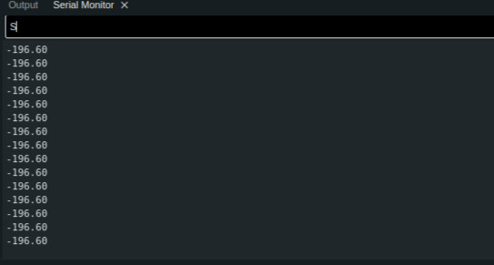

soph week 12/16 - 12/20
this week was all about lightbox project, where i had lots of issues.
generally with the lightbox, you use an atmega328p, but i decided to create as small of a lightbox as possible, and ended up using an attiny84.
orignally, i was planning to use an attiny25, as the shop doesn’t have an attiny85’s, but the problem is that despite using lightweight libraries to allow the attiny25 to run the code, it just cannot handle the neopixel, and leads to plenty of errors.
using the attiny84 was just as frustrating, as the microcontroller stopped working randomly many times, setting me back quite a bit of time
in the end, i got a simple temperature sensor to partially work with my lightbox. (the 18b20 temp sensor im using is having connection issues, which leads to the code running half the time) which will be depicting the color of my box.
#include
#include
#include
#define one_wire_bus 2
#define led_pin 10
#define numpixels 8
OneWire oneWire(one_wire_bus);
DallasTemperature sensor (&oneWire);
WS2812 LED(nnumpixels);
cRGB value;
void setup() {
LED.setOutput(led_pin);
// Serial.begin(9600) will break the burnloader when uncommented
sensor.begin();
}
void loop() {
sensor.requestTemperatures();
float c = sensor.getTempCByIndex(0);
float f = sensor.getTempFByIndex(0);
Serial.println(f);
delay(100);
if (f > 20) {
value.b = 20; value.g = 0; value.r =0;
LED.set_crgb_at(0, value);
} else {
value.b = 0; value.g = 20; value.r = 0;
LED.set_crgb_at(0, value);
}
LED.sync();
delay(500);
}
a short code i wrote to test if the neopixels would light up given the temperature, but it didn't go how i expected.
